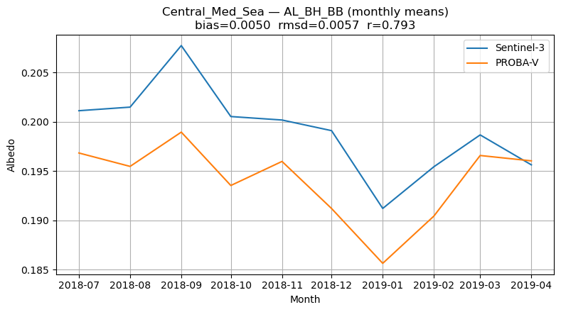
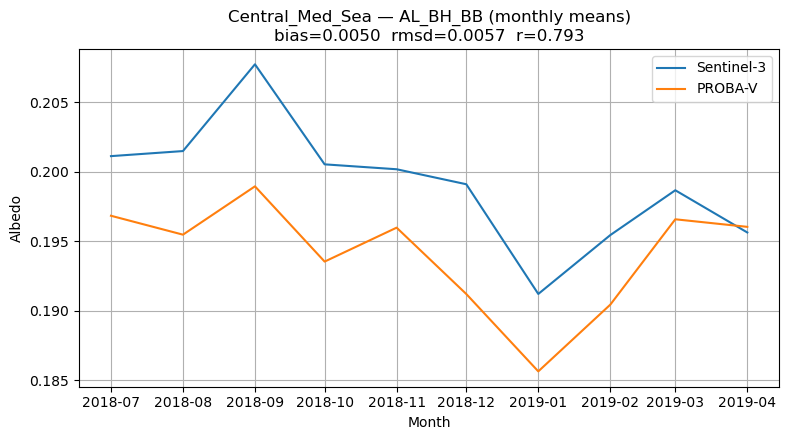
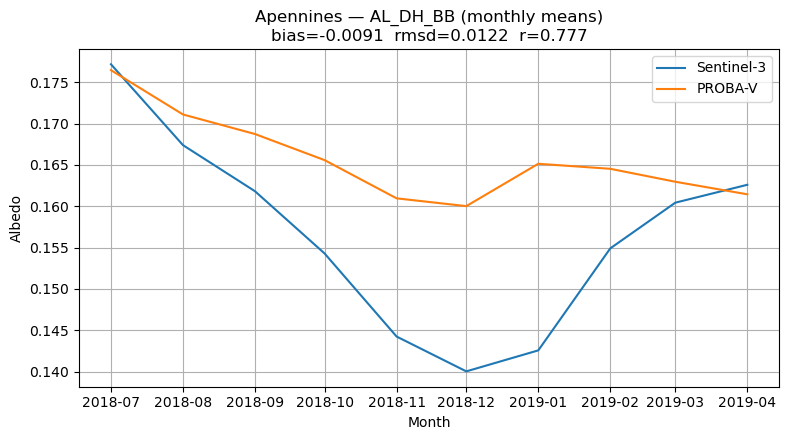
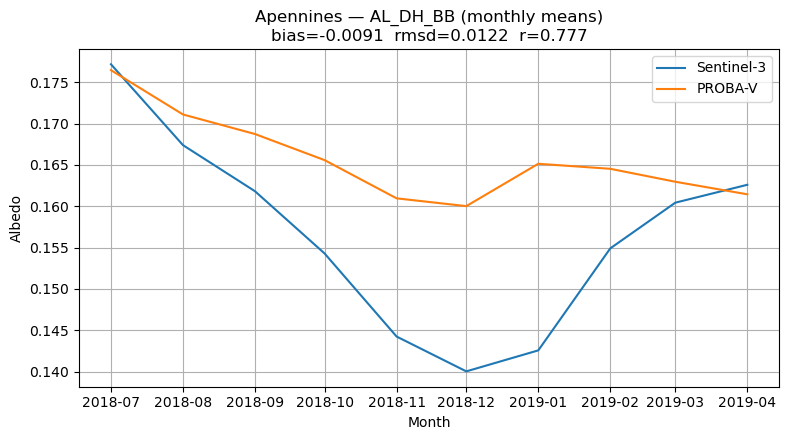

1.4.1. Assessment of bias, RMS deviation (RMSD), and correlation between the two datasets at regional scales for the years 2018–2019#
 
Production date: 30-09-2024
Produced by: Consiglio Nazionale delle Ricerche (CNR- Fabio Madonna and Faezeh Karimian.)
üåç Use case: Regional consistency of surface albedo datasets#
❓ Quality assessment questions#
• How consistent are Sentinel-3 and PROBA-V albedo estimates in specific regions such as the Alps, Pyrenees, Sahara Desert, or Mediterranean?
The Mediterranean basin and North Africa represent key regions for albedo monitoring due to their climatic and land surface diversity. The Mediterranean combines densely populated coastal zones with heterogeneous landscapes (forests, croplands and mountains), while North Africa is dominated by the Sahara Desert, one of the largest and brightest natural surfaces on Earth. The presence of snow cover in mountain ranges (e.g., the Alps, Pyrenees, and Atlas Mountains), strong vegetation seasonality, and the influence of dust and aerosols further complicate albedo retrievals from space in this domain (Carrer et al., 2018; Liang et al., 2020). Two satellite missions from the European Space Agency provide long-term surface albedo products suitable for such analyses: Sentinel-3 (OLCI + SLSTR), delivering albedo at 300 m resolution, and PROBA-V (VGT sensor), delivering albedo at 1 km resolution. Both datasets are accessible through the Copernicus Climate Data Store (CDS) and form part of the Essential Climate Variables (ECVs) for land monitoring (Copernicus, 2020; Dierckx et al., 2014).
Previous studies have assessed albedo products at global scales, but regional evaluations over the Mediterranean and North Africa remain limited. These areas are of high climatic relevance due to strong land–atmosphere coupling, rapid land cover changes, and their role in the energy balance of the Euro-Mediterranean climate system (Giorgi, 2006; Cherif et al., 2020).
This study compares Sentinel-3 and PROBA-V surface albedo products over the Mediterranean and North Africa for the period 2018–2019. By analyzing regional time series and computing bias, RMS deviation (RMSD), and correlation, the study aims to quantify the agreement between the two datasets at the regional scale.
üì¢ Quality assessment statement#
These are the key outcomes of this assessment
• Across most regions, Sentinel-3 and PROBA-V albedo datasets show very high correlations (>0.9) for black-sky and white-sky visible albedo (AL_BH_VI, AL_DH_VI). This indicates strong consistency in the visible band.
• Negative biases (Sentinel-3 lower than PROBA-V) dominate in mountain regions (Alps, Pyrenees, Apennines, Black Forest), with values typically between –0.01 and –0.02. These biases are most pronounced in the diffuse broadband albedo (for example, the AL_DH_BB bias ≈ –0.026 in the Alps and Po Valley).
• Over the Central Mediterranean Sea region, biases are small and slightly positive (~+0.004–0.007), and correlations are high in the visible albedo (>0.97). This suggests that Sentinel-3 tends to retrieve slightly higher albedo values over water surfaces, while diffuse broadband albedo shows weaker correlation (r ≈ 0.65), indicating greater uncertainty in marine environments.
• The Sahara Desert exhibits excellent agreement with low RMSD (<0.02) and high correlation (>0.9 for most variables). The only exception is a stronger negative bias in visible albedo (AL_BH_VI ≈ –0.036), possibly related to surface brightness and sensor calibration differences.
• The Black Forest region shows a strong breakdown in correlation for diffuse broadband albedo (AL_DH_BB, r ≈ 0.00), highlighting challenges in dense forest environments where retrieval algorithms differ more strongly.
• Seasonal cycles are captured consistently in all regions, but diffuse albedo metrics (AL_DH_BB) tend to have weaker correlations (0.65–0.78 in Central Med., Po Valley, Apennines), pointing to sensitivity to cloudiness, atmospheric conditions, or retrieval assumptions.
• Overall, the two datasets are fit for regional albedo monitoring across the Mediterranean and North Africa, but caution is required in snow-affected mountains, dense forest areas, and marine regions where retrievals are less reliable.
üìã Methodology#
This assessment aims to evaluate the bias, RMS deviation (RMSD), and correlation between surface albedo products from PROBA-V and Sentinel-3 (OLCI/SLSTR). The comparison is performed at a regional scale over the period 2018–2019.
The methodology adopted for the analysis is split into the following steps:
Choose the data to use and set up the code
Import all required libraries
Spatial and temporal definitions
Data Retrieval and Preparation
Download the albedo data
Data preparation
Define required functions
Normalizing coordinates
Regrid Sentinel-3 to PROBA-V grid
Computation of timeseries
3. Plot and describe the results.
Metrics per variable
Build a tidy monthly diff table for each variable
Regional Case Studies
Plot monthly time series (S3 vs PV) for each region & variable
Plot full-domain monthly time-series plots
üìà Analysis and results#
Choose the data to use and set up the code#
Import all required libraries#
In this section, we import all the relevant packages needed for running the notebook.
Spatial and temporal definitions#
The analysis in this assessment focuses on data from July 2018 to April 2019, using monthly averages derived from Sentinel-3 (OLCI+SLSTR) and PROBA-V (VGT). The study domain covers selected regions across the Mediterranean Basin and North Africa, including the Alps, Pyrenees, Po Valley, Apennines, Black Forest, Central Mediterranean Sea, and the Sahara Desert. Each subregion is defined by specific latitude and longitude bounds and used to compute area-weighted regional means.
Data Retrieval and Preparation#
In this step, the selected satellite data is downloaded using predefined time and variable settings. The data is then formatted to include a clear time coordinate, and average maps of key variables like AOD550 and FM_AOD550 are calculated over the full time period to prepare for analysis and visualization.
Download the albedo data#
satellite='proba'
0%| | 0/10 [00:00<?, ?it/s]
10%|█ | 1/10 [00:00<00:06, 1.30it/s]
20%|██ | 2/10 [00:01<00:03, 2.02it/s]
30%|███ | 3/10 [00:01<00:03, 2.21it/s]
40%|████ | 4/10 [00:02<00:02, 2.07it/s]
50%|█████ | 5/10 [00:02<00:01, 2.54it/s]
60%|██████ | 6/10 [00:02<00:01, 2.95it/s]
70%|███████ | 7/10 [00:02<00:00, 3.09it/s]
80%|████████ | 8/10 [00:02<00:00, 3.77it/s]
90%|█████████ | 9/10 [00:03<00:00, 4.40it/s]
100%|██████████| 10/10 [00:03<00:00, 5.26it/s]
100%|██████████| 10/10 [00:03<00:00, 3.17it/s]
satellite='sentinel_3'
0%| | 0/10 [00:00<?, ?it/s]
10%|█ | 1/10 [00:00<00:01, 8.29it/s]
20%|██ | 2/10 [00:00<00:00, 8.08it/s]
30%|███ | 3/10 [00:00<00:00, 8.65it/s]
50%|█████ | 5/10 [00:00<00:00, 8.17it/s]
70%|███████ | 7/10 [00:00<00:00, 10.58it/s]
90%|█████████ | 9/10 [00:01<00:00, 4.11it/s]
100%|██████████| 10/10 [00:01<00:00, 4.56it/s]
100%|██████████| 10/10 [00:01<00:00, 5.51it/s]
Data preparation#
Define requiered functions#
Normalizing coordinates#
Regrid Sentinel-3 to PROBA-V grid#
Computation of timeseries#
{'AL_BH_BB': time
2018-07-01 0.337296
2018-08-01 0.332349
2018-09-01 0.330755
2018-10-01 0.324169
2018-11-01 0.317215
2018-12-01 0.314358
2019-01-01 0.317790
2019-02-01 0.322398
2019-03-01 0.325821
2019-04-01 0.324855
Freq: MS, dtype: float64, 'AL_DH_BB': time
2018-07-01 0.340296
2018-08-01 0.335331
2018-09-01 0.333684
2018-10-01 0.327390
2018-11-01 0.321421
2018-12-01 0.318299
2019-01-01 0.320556
2019-02-01 0.324229
2019-03-01 0.327485
2019-04-01 0.326562
Freq: MS, dtype: float64, 'AL_BH_VI': time
2018-07-01 0.192046
2018-08-01 0.188274
2018-09-01 0.187777
2018-10-01 0.184372
2018-11-01 0.181179
2018-12-01 0.184031
2019-01-01 0.190742
2019-02-01 0.192383
2019-03-01 0.191124
2019-04-01 0.188440
Freq: MS, dtype: float64, 'AL_DH_VI': time
2018-07-01 0.205592
2018-08-01 0.201033
2018-09-01 0.200127
2018-10-01 0.196880
2018-11-01 0.194131
2018-12-01 0.197460
2019-01-01 0.203935
2019-02-01 0.205497
2019-03-01 0.204015
2019-04-01 0.201420
Freq: MS, dtype: float64}
{'AL_BH_BB': time
2018-07-01 0.357331
2018-08-01 0.347574
2018-09-01 0.342306
2018-10-01 0.338786
2018-11-01 0.328633
2018-12-01 0.326856
2019-01-01 0.332799
2019-02-01 0.333602
2019-03-01 0.337294
2019-04-01 0.338610
Freq: MS, dtype: float64, 'AL_DH_BB': time
2018-07-01 0.336285
2018-08-01 0.328764
2018-09-01 0.327239
2018-10-01 0.328927
2018-11-01 0.324892
2018-12-01 0.326095
2019-01-01 0.329786
2019-02-01 0.325023
2019-03-01 0.323581
2019-04-01 0.321803
Freq: MS, dtype: float64, 'AL_BH_VI': time
2018-07-01 0.222828
2018-08-01 0.216823
2018-09-01 0.213795
2018-10-01 0.213045
2018-11-01 0.208273
2018-12-01 0.210073
2019-01-01 0.220751
2019-02-01 0.218667
2019-03-01 0.217125
2019-04-01 0.214345
Freq: MS, dtype: float64, 'AL_DH_VI': time
2018-07-01 0.211086
2018-08-01 0.206268
2018-09-01 0.205090
2018-10-01 0.206451
2018-11-01 0.205102
2018-12-01 0.209387
2019-01-01 0.218725
2019-02-01 0.212552
2019-03-01 0.208159
2019-04-01 0.204444
Freq: MS, dtype: float64}
3. Plot and describe the results.#
Metrics per variable#
n_months bias rmsd corr
variable
AL_BH_BB 10 -0.013679 0.013923 0.968835
AL_BH_VI 10 -0.027536 0.027591 0.920367
AL_DH_BB 10 0.000286 0.005474 0.572778
AL_DH_VI 10 -0.007717 0.008551 0.571905
Build a tidy monthly diff table for each variable#
AL_BH_BB monthly means:
S3 PV S3-PV
time
2018-07-01 0.337296 0.357331 -0.020036
2018-08-01 0.332349 0.347574 -0.015224
2018-09-01 0.330755 0.342306 -0.011551
2018-10-01 0.324169 0.338786 -0.014617
2018-11-01 0.317215 0.328633 -0.011418
2018-12-01 0.314358 0.326856 -0.012497
2019-01-01 0.317790 0.332799 -0.015010
2019-02-01 0.322398 0.333602 -0.011204
2019-03-01 0.325821 0.337294 -0.011474
2019-04-01 0.324855 0.338610 -0.013755
AL_BH_VI monthly means:
S3 PV S3-PV
time
2018-07-01 0.192046 0.222828 -0.030782
2018-08-01 0.188274 0.216823 -0.028549
2018-09-01 0.187777 0.213795 -0.026018
2018-10-01 0.184372 0.213045 -0.028673
2018-11-01 0.181179 0.208273 -0.027094
2018-12-01 0.184031 0.210073 -0.026041
2019-01-01 0.190742 0.220751 -0.030010
2019-02-01 0.192383 0.218667 -0.026284
2019-03-01 0.191124 0.217125 -0.026001
2019-04-01 0.188440 0.214345 -0.025905
AL_DH_BB monthly means:
S3 PV S3-PV
time
2018-07-01 0.340296 0.336285 0.004012
2018-08-01 0.335331 0.328764 0.006567
2018-09-01 0.333684 0.327239 0.006445
2018-10-01 0.327390 0.328927 -0.001537
2018-11-01 0.321421 0.324892 -0.003472
2018-12-01 0.318299 0.326095 -0.007796
2019-01-01 0.320556 0.329786 -0.009229
2019-02-01 0.324229 0.325023 -0.000794
2019-03-01 0.327485 0.323581 0.003904
2019-04-01 0.326562 0.321803 0.004759
AL_DH_VI monthly means:
S3 PV S3-PV
time
2018-07-01 0.205592 0.211086 -0.005493
2018-08-01 0.201033 0.206268 -0.005234
2018-09-01 0.200127 0.205090 -0.004963
2018-10-01 0.196880 0.206451 -0.009571
2018-11-01 0.194131 0.205102 -0.010971
2018-12-01 0.197460 0.209387 -0.011926
2019-01-01 0.203935 0.218725 -0.014790
2019-02-01 0.205497 0.212552 -0.007055
2019-03-01 0.204015 0.208159 -0.004144
2019-04-01 0.201420 0.204444 -0.003024
Regional Case Studies#
Alps metrics (S3 vs PV):
n_months bias rmsd corr
variable
AL_BH_BB 10 -0.019920 0.021729 0.937175
AL_BH_VI 10 -0.013449 0.015783 0.994077
AL_DH_BB 10 -0.025603 0.030618 0.742944
AL_DH_VI 10 -0.016040 0.019107 0.993325
Central_Med_Sea metrics (S3 vs PV):
n_months bias rmsd corr
variable
AL_BH_BB 10 0.005040 0.005664 0.793091
AL_BH_VI 10 0.004252 0.004871 0.978351
AL_DH_BB 10 0.004371 0.006145 0.649131
AL_DH_VI 10 0.007437 0.007852 0.980778
Pyrenees metrics (S3 vs PV):
n_months bias rmsd corr
variable
AL_BH_BB 10 -0.009863 0.010026 0.991194
AL_BH_VI 10 -0.005246 0.006332 0.980904
AL_DH_BB 10 -0.010961 0.012947 0.717824
AL_DH_VI 10 -0.004284 0.005934 0.974981
Po_Valley metrics (S3 vs PV):
n_months bias rmsd corr
variable
AL_BH_BB 10 -0.020918 0.022444 0.923243
AL_BH_VI 10 -0.014308 0.015867 0.994204
AL_DH_BB 10 -0.025536 0.029506 0.720271
AL_DH_VI 10 -0.016268 0.019059 0.986756
Apennines metrics (S3 vs PV):
n_months bias rmsd corr
variable
AL_BH_BB 10 -0.009374 0.010180 0.962772
AL_BH_VI 10 -0.007019 0.007377 0.961339
AL_DH_BB 10 -0.009149 0.012159 0.777375
AL_DH_VI 10 -0.005822 0.006728 0.928460
Black_Forest metrics (S3 vs PV):
n_months bias rmsd corr
variable
AL_BH_BB 10 -0.013114 0.015001 0.904526
AL_BH_VI 10 -0.011574 0.013266 0.964559
AL_DH_BB 10 -0.019522 0.025310 0.001752
AL_DH_VI 10 -0.014301 0.016882 0.951327
Sahara_Desert metrics (S3 vs PV):
n_months bias rmsd corr
variable
AL_BH_BB 10 -0.018541 0.019029 0.973948
AL_BH_VI 10 -0.035778 0.036212 0.917734
AL_DH_BB 10 -0.000281 0.002709 0.959763
AL_DH_VI 10 -0.010104 0.011165 0.842866
Plot monthly time series (S3 vs PV) for each region & variable#
 

 


Figure 1. Monthly time series (S3 vs PV) for each region & variable.
Plot full-domain monthly time-series plots#
Figure 2. Full-domain monthly time-series plots.
Take-Home Messages#
Sentinel-3 and PROBA-V show consistent surface albedo patterns globally.
The bias highlights systematic differences, possibly due to calibration and angular effects.
The RMSD quantifies the magnitude of deviations.
The correlation confirms the ability of both sensors to track temporal variability.
ℹ️ If you want to know more#
Key Resources#
Surface albedo 10-daily gridded data from 1981 to present
https://cds.climate.copernicus.eu/datasets?q=albedo&limit=30
Code libraries used:
C3S EQC custom functions,
c3s_eqc_automatic_quality_control, prepared by BOpen
References#
[1] Lucht, W., et al. (2000). Retrieval of land surface albedo from satellite observations: A simulation study. Remote Sensing of Environment, 64(3), 214–231.
[2] Schaaf, C. B., et al. (2002). First operational BRDF, albedo and nadir reflectance products from MODIS. Remote Sensing of Environment, 83(1–2), 135–148.
[3] Dierckx, W., et al. (2014). PROBA-V mission for global vegetation monitoring: Standard products and image quality. International Journal of Remote Sensing, 35(7), 2589–2614.
[4] Carrer, D., et al. (2018). Evaluation of satellite albedo products over land. Remote Sensing of Environment, 216, 453–470.
[5] Liang, S., et al. (2020). Remote sensing of land surface albedo: Progress and perspectives. ISPRS Journal of Photogrammetry and Remote Sensing, 163, 101–122.
[6] Copernicus Climate Change Service (C3S). (2020). Surface albedo from satellite observations. Climate Data Store.
[7] Giorgi, F. (2006). Climate change hot-spots. Geophysical Research Letters, 33(8).
[8] Cherif, C., et al. (2020). Climate change in the Mediterranean: Analysis and projections. Climate Dynamics, 54, 3711–3730.